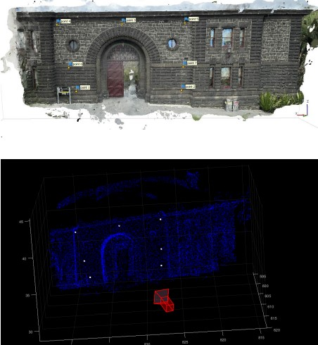
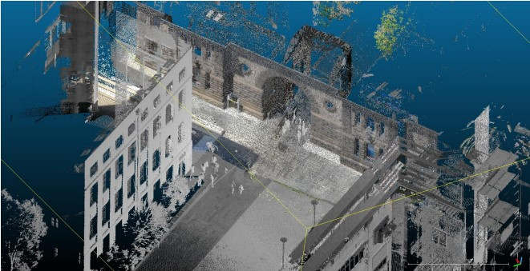
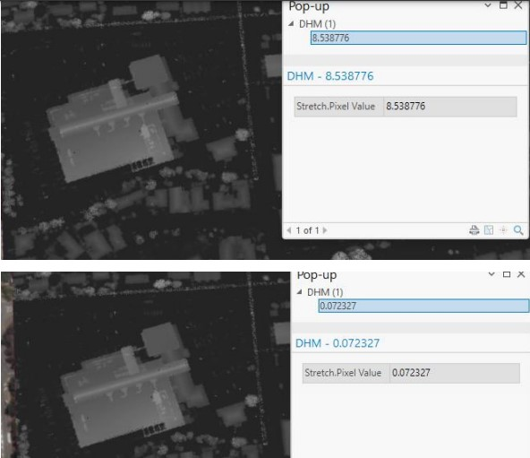
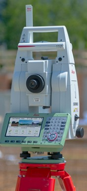
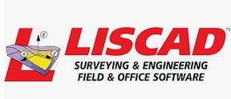

Geoportfolio
Charbel Harfouche (Charbel Harfouche)
About
This website is the geoportfolio of Charbel Harfouche. The website entails
information that is academically and profesionally related to the field of Surveying.
www.linkedin.com/in/charbel-harfouche-7049881a1
A brief introduction about myself is that I am born and raised in Melbourne, Australia and as of November 1992, I am in my fourth and final year of the
Bachelor of Applied Science (Surveying) (Honours) course. My surveying related interests is working with Total stations, levelling and GPS to collection data for
feature and level surveys, Title re-establishment surveys and subdivisions. My current major project that im working on is a comparison
between a Leica and Trimble GPS with there positioning accuracies for Emirates team New Zealand land yacht.
My own personal hobbies include travelling, being outdoors and playing sports!
Academic Portfolio Overview
Capstone Design
Capstone (Design) is the first part of your major project assessment which is extended over 2 semesters in our final year.
It focuses on designing and developing a proposal for your major project, giving you a foundation that you will take into the
second semester to help you finish you major project.
- Assessment 1: Student supervisor agreement is just an agreement that you and your supervisor sign on with how you will approach your major project.
- Assessment 2: Poster confrence presentation is creating a poster about your major project to be presented infront of teachers and industry leaders.
- Assessment 3: Literature review and capstone project plan is a report of what has been researched before and the plan you will take.
Below is a photo of my Capstone poster that was presented at RMIT
Note: If map display is too small, right-click the image and 'Open in new tab' to allow zooming of the map.
My Capstone poster

Advanced imaging technology (AGT)
Advanced imagine technology invovled a few practicals and a few tests/exam that were interesting and involved a range of different technologies and programs.
Last year, we compeleted 3 practicals in AIT that involved the use of LIDAR. All 3 practicals where from different types of observations one from a photo from an iPhone,
another was from the use of a terrestial and mobile laser scanner and the last one being and aerial image. The assessment names are mentioned below:
- Photogrammetry practical: 3D Photogrammetry reconstruction of Melbourne Gaol
- LiDAR practical 1: 3D reconstruction of Melbourne Gaol using terrestial and mobile laser scanner
- LiDAR practical 2: visualisation Aerial LiDAR data and creating surface models
The reconstruction of Melbourne goal was creating using Agisoft Metashape Pro and MATLAB and also required the use of our own personal phones along with a measuring
tape that was at least 10m. The second practical involved information that was retreived from multiple scanners which were used to scan the melbourne gaol facade
the main program used for this assessment was cloudcompare. The last practical was looking over an aerial image and creating surface models from it. This required
the use of ArcGIS Pro with "spatial analysis" and "ImageAnalyst". Below are photos that show the completed models of what was created.
Note: If map display is too small, right-click the image and 'Open in new tab' to allow zooming of the map.
Photogrammetry practical: 3D Photogrammetry reconstruction of Melbourne Gaol

LiDAR practical 1: 3D reconstruction of Melbourne Gaol using terrestial and mobile laser scanner

LiDAR practical 2: visualisation Aerial LiDAR data and creating surface models

Industry Experience
This page will briefly cover all my work experience (as of September 2022) within the geospatial science industry. The two main companies that I have worked at
were AAM Group and Tetra Tech. This page will outline my experience gained and skills I have learned from working at AAM Group and Tetra Tech along with an
overview of my current geospatial skillset.
Intrax
Graduate Surveyor
November 2020 - Current
Im currently working at Intraxfor nearly 4 years. Whilst being here ive learnt alot of industry standard skills that are used daily in the surveying industry.
When i had applied for my job at Intrax i had done some research about the comoany and seen that it was a large organization that works and completes in a large
variety of surveying activities which grasped my interest.
Im currently part of the Land departmart, also known as the surveying team. I work on sites that require feature and level surveys and medium density surveys, i also
work on new estate title re-establishments and also assist in subdivision work. The programs that im exposed to at work are BrisCAD and LisCAD and the equipement that
i use is Lecia branded.
Skills and Proficiencies
|
GIS |
 |
QGIS |
|
Cartographic Principles |
 |
Adobe Illustrator |
Credits and Attributions
The following programming languages and software were used to create the website
- HTML
- CSS
- JavaScript
- Visual Studio Basic
The deliverables contains content from the following subjects:
- Cartography 2 (GEOM2079)
- Applied Geospatial Techniques (GEOM2083)
Special thanks to the following people who have helped me make this website with their expertise and guidance:
As per the policy of using the Flaticons with a free account, the attributions and crediting of the creators of the icons are as below:
Attributions of icons used: